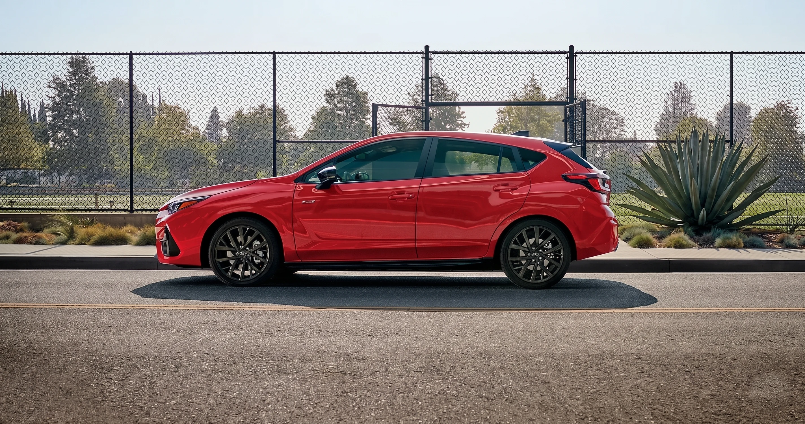

Your Subaru is built for the long haul. Outbacks, Foresters, Crosstreks, Imprezas, and Ascents routinely cross 200,000 miles when owners stick to the maintenance schedule. The schedule is the contract between Subaru's engineers and your engine, transmission, brakes, and drivetrain. Skip it and small problems compound into expensive ones.
Las Vegas changes the math. Summer surface temperatures on a black asphalt lot at noon can climb past 150 degrees Fahrenheit. Vegas drivers earn a severe-service classification on paper, and the smart move is to follow severe-service intervals for heat-sensitive items.
FINDLAY SUBARU OF LAS VEGAS · SERVICEThe Subaru Express Service drive-through at Findlay Subaru of Las Vegas, the in-and-out path for factory-scheduled maintenance from 6,000 to 120,000 miles.
01The Vegas factor
Why scheduled maintenance matters in the Vegas heat.
Heat is a stress multiplier. Engine oil degrades faster at sustained high temperatures. Rubber components dry out and crack sooner than they would in a temperate climate.
Coolant additives deplete faster when the system runs overtime in 110-degree afternoons. Brake fluid absorbs moisture. Battery cases vent and lose electrolyte, and the 12-volt battery is the most common roadside-call cause in Clark County during July and August. Belts, hoses, motor mounts, and weatherstripping all age faster in the Mojave than they would in a coastal city.
Why the schedule protects your warranty
Following the Subaru maintenance schedule, and treating Vegas conditions as severe service for heat-sensitive items, also protects your warranty position. Subaru's New Vehicle Limited Warranty and Powertrain Limited Warranty both require that scheduled maintenance be performed on time, with appropriate parts and fluids, and documented. A complete service history from a Subaru-certified shop makes warranty claims short. Without one, they get long.
What this guide covers
This guide walks through every Subaru factory maintenance interval from 6,000 miles to 120,000, what gets done at each visit, how the desert changes the playbook, per-model variations, Express Service versus scheduled appointments, what to budget, and why genuine Subaru parts and certified technicians matter.
Source of truth · The intervals summarized in this guide reflect the Subaru factory schedule for current-generation vehicles. Always cross-reference your specific model year owner's manual and the Warranty and Maintenance Booklet that came with the vehicle. The owner's manual is the source of truth for your VIN. Call Service at 725-677-3193 for verification on a specific Subaru.
02The mileage map
Subaru maintenance schedule by mileage.
The intervals below summarize the Subaru factory schedule for current-generation vehicles. Always cross-reference your specific model year owner's manual.
The Warranty and Maintenance Booklet that came with the vehicle is authoritative for your VIN. Use this guide as the at-a-glance map and let your owner's manual settle anything model-specific.
Every 6,000 miles or 6 months
The 6,000-mile interval is the most frequent touchpoint and the one most often skipped. It is the foundation of the schedule.
Replace engine oil and oil filter (synthetic, Subaru-spec viscosity per owner's manual)
Rotate tires and inspect tread depth and wear pattern
Inspect brakes (pads, rotors, calipers, hoses)
Inspect axle boots and steering linkage
Inspect drive belts
Inspect cooling system, hoses, and connections
Check all fluid levels (transmission, brake, coolant, washer)
Inspect exhaust system
Reset maintenance reminder
Every 12,000 miles or 12 months
Includes everything in the 6,000-mile interval, plus:
Replace engine air filter (severe-service interval in dusty conditions; standard is 30,000 miles, but Vegas dust often justifies earlier replacement)
Inspect cabin air filter, replace as needed
Inspect parking brake operation
Inspect suspension components
Every 30,000 miles
The 30,000-mile service is the first major interval. Plan for a longer visit.
All 6,000- and 12,000-mile items
Replace engine air filter (standard interval)
Replace cabin air filter
Inspect brake fluid, replace per manual recommendation
Inspect fuel lines, fuel tank band, and evap system
Inspect CVT or manual transmission fluid level and condition
Inspect front and rear differential gear oil
Inspect spark plugs (replacement at 60,000 for most non-turbo, sooner for turbo)
Road test and full multi-point inspection
For today's pricing on the 30,000-mile service, see Findlay Subaru of Las Vegas's live service specials.
6k / 6moFoundation
Oil + rotation + inspect
The most frequent touchpoint. Synthetic oil and filter, tire rotation, brake and fluid inspection, plus a reset of the maintenance reminder. The interval most often skipped, and the foundation of the schedule.
30kFirst major
First major interval
Filters + fluids + multi-point. Engine and cabin air filters, brake fluid inspection, fuel line and evap inspection, CVT and differential fluid checks, spark plug inspection, plus a road test.
60kHigh-value
High-value inspection
Spark plugs + brake fluid + drivetrain. Spark plug replacement on most non-turbo models, brake fluid replacement, drive-belt inspection, CVT and differential fluid checks, coolant condition test.
120kLong-haul
Long-haul service
Plugs + coolant + CVT fluid. Spark plugs, coolant replacement, CVT fluid, differential gear oil, plus a timing chain assembly, water pump, and accessory-drive inspection. The most variable in scope by model.
Every 60,000 miles
The 60,000-mile service is the next big one and a high-value inspection point.
All prior interval items
Replace spark plugs (non-turbo Subaru models per owner's manual; turbo models, including WRX and Ascent turbo applications, follow shorter intervals)
Replace brake fluid
Inspect drive belts and replace if showing wear
Inspect timing components (Subaru's FB-series engines use timing chains, not belts, but tensioners and guides are still subject to inspection)
Inspect CVT fluid; replacement per owner's manual recommendation
Inspect transfer case and differential fluids
Inspect coolant condition; flush per manual recommendation
Comprehensive brake service as needed
Current 60,000-mile service pricing, including any active Subaru Express Service or Love-Encore promotions, is posted on the Findlay Subaru of Las Vegas service specials page.
Every 90,000 miles
All 6,000-, 12,000-, and 30,000-mile items
Inspect spark plugs (turbo) or verify condition (non-turbo)
Replace transmission fluid per manual recommendation
Inspect coolant; replace if not already done
Inspect suspension bushings and steering components
Inspect axle boots
For 90,000-mile service pricing on your specific model, check the current Findlay Subaru of Las Vegas service specials.
Every 120,000 miles
All prior interval items
Replace spark plugs (most models on the 120,000-mile spark plug cycle)
Replace coolant (Subaru Super Coolant has an extended service interval; verify against your owner's manual)
Replace CVT fluid per manual recommendation
Replace differential gear oil
Inspect timing chain assembly, water pump, and accessory drive components
Comprehensive chassis and suspension inspection
The 120,000-mile service is the most variable in scope; live pricing for your model is posted on the Findlay Subaru of Las Vegas service specials page.
Pricing for scheduled service intervals reflects current Subaru parts costs, Las Vegas service-bay rates, and seasonal specials. For today's pricing on your interval, view Findlay Subaru of Las Vegas's live service specials.
Las Vegas heat adjustments to the standard schedule.
Subaru's published intervals assume average operating conditions. Las Vegas is not average.
150°F+ asphalt
Summer lot-surface temperatures
6mooil
Lean to the 6-month side of the interval
Yr 3battery
When most Vegas batteries quit
Severeservice
How Vegas conditions classify
The owner's manual itself defines severe service to include extreme heat, dusty conditions, and short-trip driving in hot climates. Most Vegas-area driving qualifies for at least one of those buckets. Treat these items on a tighter schedule:
Engine oil
If you drive primarily in the city during summer, idle in traffic on I-15 or 215, or do short trips that keep oil from reaching full operating temperature long enough to burn off moisture, lean toward the 6-month side of the 6,000-mile-or-6-months interval. Synthetic oil tolerates heat well, but it is not immune.
Air conditioning service
Have the system performance-tested annually. Refrigerant capacity, compressor draw, and cabin temperature delta at idle and at speed are the metrics. A weak system that limps through April will not survive August.
Coolant
Coolant condition test annually. Strip-test for pH, freeze point, and inhibitor depletion. Subaru Super Coolant has a long service life on paper, but desert duty cycles deplete additive packages faster.
Battery
Have the battery load-tested every spring before the heat hits. Vegas batteries commonly fail in their third summer when they would survive five winters in a milder climate. Replace proactively rather than reactively.
Tires
Hot pavement accelerates tread wear and can mask underinflation that would be obvious in cooler weather. Check pressure when tires are cold, ideally first thing in the morning. Follow the door-jamb placard, not the sidewall maximum. Inspect for sidewall cracking annually.
04By model
Per-model variations.
The core schedule is consistent across the Subaru lineup, but specifics vary by powertrain. Always check your VIN-specific owner's manual.
Outback
2.5-liter naturally aspirated or 2.4-liter turbo, CVT. Turbo models follow shorter spark-plug and oil intervals.
Forester
2.5-liter naturally aspirated, CVT. Standard 6,000-mile interval applies cleanly.

FINDLAY SUBARU OF LAS VEGAS · LINEUPA Subaru Impreza in side profile at Findlay Subaru of Las Vegas, where per-model service intervals differ by powertrain across the Outback, Forester, Crosstrek, Impreza, and Ascent.
Crosstrek
2.0-liter or 2.5-liter. Lighter platform; pad life tends to be longer than on heavier siblings.
Impreza
2.0-liter or 2.5-liter, CVT in most trims. Cabin air filter access is straightforward for DIY between visits.
Ascent
2.4-liter turbo only. Three-row weight increases brake wear; the turbocharger tightens spark-plug, oil, and oil-filter discipline.
If your vehicle is a Subaru Certified Pre-Owned unit from Findlay Subaru of Las Vegas, your service history is on file and we can pull next-due items by VIN.
05The right lane
Express Service vs scheduled appointments.
Two ways through the service drive, and the right one depends on the work.
What Subaru Express Service is built for
Subaru Express Service is built for the short-interval, high-frequency items: oil and filter changes, tire rotations, multi-point inspections, wiper-blade replacement, cabin and engine air filter swaps, and battery testing. Our Express lanes use Subaru-trained technicians and genuine Subaru parts, and they are sized for in-and-out visits.
When to book a scheduled appointment
Scheduled appointments are the right call for the larger intervals (30,000, 60,000, 90,000, 120,000) and for any diagnostic work, transmission service, brake jobs beyond pads-and-rotors, alignments, recall work, and warranty repairs. Booking ahead lets the service advisor pull parts, assign the right technician, and offer a loaner if needed.
FINDLAY SUBARU OF LAS VEGAS · EXPRESSA Subaru Outback pulled into the Findlay Subaru of Las Vegas service drive, where service advisors greet owners for Express Service and scheduled maintenance.
Service hours and after-hours drop-off
Service hours: Mon-Fri 7:00 AM to 6:00 PM, Sat 7:00 AM to 5:00 PM, Sun closed. Early drop-off and late pick-up are supported, and the secure 24/7 key lockers let you drop the car outside business hours.
06The budget
What to budget for scheduled service.
Subaru maintenance is competitive with the segment, and skipping it costs more than doing it.
6intervals
From 6k through 120k miles
VINspecific
Pricing varies by model and trim
Writtenestimate
Before any work beyond scheduled service
Livepricing
Posted on the service specials page
Pricing varies by model, trim, current Subaru parts costs, Las Vegas service-bay rates, seasonal specials, and any additional findings during the multi-point inspection. We provide a written estimate before any work beyond the scheduled service is performed.
Current Findlay Subaru of Las Vegas service pricing
Live pricing for every interval (6,000, 12,000, 30,000, 60,000, 90,000, and 120,000 miles) plus any active Subaru Express Service or Love-Encore promotions is posted on our service specials page and refreshed as offers change.
For a written quote on your VIN, call the service desk at 725-677-3193 or book online. We put the number on paper before any work beyond the scheduled service is performed.
07Genuine + certified
Why genuine Subaru parts and Subaru-certified service.
Subaru engines are horizontally opposed boxers, with AWD as standard equipment on nearly every model.
The platform has its own service procedures, torque specs, fluid specifications, and diagnostic equipment. Genuine Subaru parts are engineered and tested to Subaru's own standards. A low-cost aftermarket filter that bypasses prematurely costs far more than the savings if it leads to engine wear.
Designations carried by this store
Findlay Subaru of Las Vegas is a Subaru Express Service location, a Certified Subaru Eco-Friendly Retailer, and the 2023 Subaru Love Promise Retailer of the Year.
Who's on the floor
Parts Manager Victor Fuentes-Pacheco and Assistant Parts Manager Simon Kazanchyan lead a department that stocks genuine Subaru parts and Subaru Parts Online for owners who service their own vehicles. Service operations run under Fixed Operations Director Carmine Kopecky, with Service Managers Shawn Duncan and Yasir Abrahams on the shop floor.
Complimentary perks with service
Car wash with service
Available loaner vehicles
Customer lounge with complimentary Wi-Fi, snacks, and beverages
EV charging on site
Family-friendly waiting area with kids playroom, café, and work area
Pet welcome, with an on-site dog park
Contact
Service:725-677-3193 (Mon-Fri 7:00 AM to 6:00 PM, Saturday 7:00 AM to 5:00 PM, Sunday closed)
The valley's Subaru service center built around the schedule.
Subaru Express Service, certified Subaru technicians, genuine Subaru parts, and a service history filed by VIN. The 2023 Subaru Love Promise Retailer of the Year.
200k+ mi
What Subarus reach on schedule
6k mi
Standard oil and inspection interval
24/7
Key locker after-hours drop-off
2023
Subaru Love Promise Retailer of the Year
Service programs
Subaru Express Service · expedited oil, filters, rotation, and multi-point inspection.
Certified Subaru Eco-Friendly Retailer · fluid disposal, recycling, and shop emissions to Subaru's environmental standard.
Genuine Subaru Parts · engineered and tested to Subaru's own standards, stocked at our parts counter.
Subaru Parts Online · Genuine Subaru Parts looked up by VIN for DIY owners.
Love-Encore · new-owner onboarding.
Subaru Certified Pre-Owned · service history filed by VIN.
What's on site
Customer lounge with complimentary Wi-Fi, snacks, and beverages. Car wash with service. Available loaner vehicles.
EV charging on site. Kids playroom, café, and work area. Pet-welcome showroom and on-site dog park.
Secure 24/7 key lockers for after-hours drop-off and early-morning pick-up.
Hours & contact
Service Mon–Fri 7 AM–6 PM · Sat 7 AM–5 PM Sunday closed
Frequently asked questions about Subaru maintenance.
How often should I change my Subaru's oil in Las Vegas?
Subaru's standard interval is 6,000 miles or 6 months, whichever comes first, with full synthetic oil. In Las Vegas heat, if you do mostly short city trips or sit in summer traffic, treat the 6-month side of that window as the harder limit rather than waiting on mileage.
Always verify the spec for your model year in your owner's manual.
Do I need to follow the severe-service schedule in Vegas?
For heat-sensitive items (engine oil, coolant condition, battery testing, AC service, and tire pressure monitoring), yes.
The Subaru owner's manual defines severe service to include extreme heat, dust, and short-trip driving in hot climates, and Las Vegas qualifies on all three for most of the calendar year.
Will skipping a scheduled service void my Subaru warranty?
Subaru's warranty requires that scheduled maintenance be performed on time using appropriate parts and fluids, and documented. A single missed interval will not automatically void coverage, but a pattern of skipped maintenance, or a failure that traces to a skipped service, can be denied.
Keep records. Findlay Subaru of Las Vegas maintains your full service history on file when work is done with us.
Can I have my Subaru serviced at a non-Subaru shop and keep my warranty?
Federal law (the Magnuson-Moss Warranty Act) protects your right to use independent shops without voiding the warranty, provided the work is done correctly with appropriate parts.
That said, Subaru-certified technicians using genuine Subaru parts give you the strongest position in a warranty claim and the deepest familiarity with the boxer-engine, symmetrical-AWD platform. Our team is Subaru-trained and uses Subaru diagnostic equipment.
How long does a typical Express Service visit take?
Express Service is built for short-interval items (oil and filter, tire rotation, multi-point inspection) and is designed to be in-and-out same day.
Call 725-677-3193 or use the 24/7 key lockers for after-hours drop-off.
What is included in the 30,000-mile and 60,000-mile services?
The 30,000-mile service typically includes oil and filter, tire rotation, full multi-point inspection, engine and cabin air filter replacement, brake fluid inspection, and inspection of CVT, differential, and coolant condition.
The 60,000-mile service adds spark plug replacement on most non-turbo models, brake fluid replacement, and a comprehensive inspection of belts, timing components, and drivetrain fluids. Specific items vary by model and model year; your owner's manual is the source of truth.
09Schedule service
Schedule service or order parts
Last reviewed by the Findlay Subaru of Las Vegas certified service team · May 12, 2026
Editorial byline
Findlay Subaru of Las Vegas certified service team
With review by Service Manager byline (pending sign-off).
Findlay Subaru of Las Vegas · 6455 Roy Horn Way, Las Vegas, NV 89118
Intervals summarized here reflect the Subaru factory schedule for current-generation vehicles. Specifics vary by model year and powertrain, so your owner's manual and Warranty and Maintenance Booklet remain the source of truth for your VIN. Live service pricing is posted on the service specials page and refreshed as offers change.
For a written quote on your VIN, call Service at 725-677-3193 or visit us at 6455 Roy Horn Way, Las Vegas, NV 89118.
Subaru Express Service for the short-interval items, scheduled appointments for the 30k / 60k / 90k / 120k visits. Live pricing posted on the service specials page.